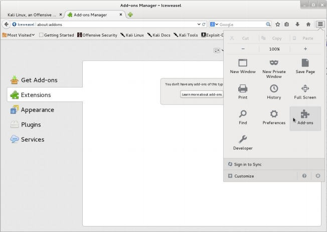
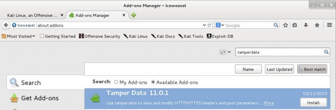
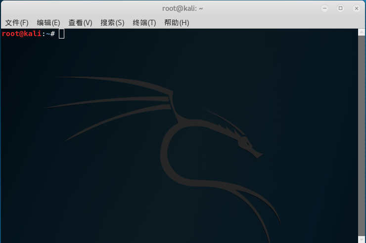
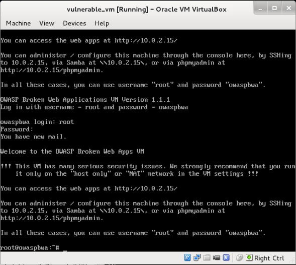
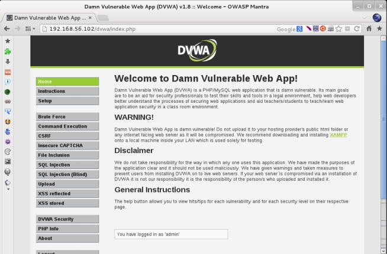
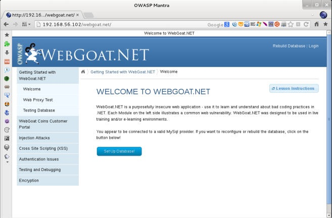
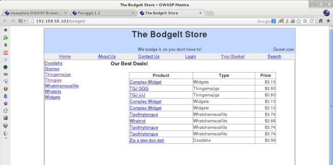

安装 Kali
从官方网站下载
1 | root@Kali:~# https://www.kali.org/downloads/ |
在虚拟机上运行就要对应找虚拟机版本，官方网站已经有制作的好的虚拟机端下载。这里我下载的是 Kali Linux 32 Bit Vbox 版本，具体下载连接如下：
1 | root@Kali:~# https://images.offensive-security.com/virtual-images/kali-linux-2018.3-vbox-i386.ova |
下载好后用虚拟机加载，当然也可以下载正常版本的Kali，对应选择软件版本，这里我显泽x64：
1 | Kali Linux 64 Bit |
下载好后可以安装在电脑上，同样也可以通过虚拟机安装，这里就不详细介绍，安装完毕后开机启动，进入kali主界面。
更新源
1 | root@Kali:~# leafpad /etc/apt/sources.list |
1 | #中科大 |
保存后之后回到命令行下执行命令：
1 | root@Kali:~# apt-get update && apt-get upgrade && apt-get dist-upgrade |
1 | root@Kali:~# apt-get clean #删除以下载的包 |
1 | root@Kali:~# reboot #重新启动 |
使用ssh进行远程登陆
配置SSH参数
修改sshd_config文件，命令为：
1 | vi /etc/ssh/sshd_config |
打开文件后寻找配置如下：
1 | #PermitRootLogin without-password #修改为 PermitRootLogin yes |
输入：wq 回车 保存并退出。
启动SSH服务
启动命令为：
1 | root@Kali:~# /etc/init.d/ssh start |
查看SSH服务状态是否正常运行命令为：
1 | root@Kali:~# /etc/init.d/ssh status |
使用SSH工具登陆
登陆工具有：Putty\SecureCRT\XShell等
终端界面命令登陆：
1 | root@Kali:~# ssh xxx.xxx.xxx.xxx |
输入用户名、密码连接kali。
置系统自动启动SSH服务
自启动方法一
1 | root@Kali:~# sysv-rc-conf |
自启动方法二
1 | root@Kali:~# update-rc.d ssh enable //系统自动启动SSH服务 |
基础配置
安装和运行OWASP Mantra
OWASP（开放 Web 应用安全项目，https://www.owasp.org/）中的研究员已经将 Mozilla FIrefox 与 大量的插件集成，这些插件用于帮助渗透测试者和开发者测试 Web 应用的 bug 或 安全缺陷。这个秘籍中，我们会在 Kali 上安装 OWASP Mantra（http://www.getmantra.com/） 首次运行它，并查看一些特性。
大多数 Web 应用渗透测试都通过浏览器来完成。这就是我们为什么需要一个带有一组工具的
浏览器来执行这样一个任务。OWASP Mantra 包含一系列插件来执行任务，例如：
- 嗅探和拦截 HTTP 请求
- 调试客户端代码
- 查看和修改 Cookie
- 收集关于站点和应用的信息
操作步骤
打开终端并执行：
1 | root@Kali:~# apt-get install owasp-mantra-ff |
终端中输入以下命令即可启动
1 | root@Kali:~# owasp-mantra-ff |
配置 Iceweasel 浏览器
如果我们不喜欢 OWASP Mantra，我们可以使用 Firefox 的最新版本，并安装我们自己的测试相关插件。Kali Linux 包含了 Iceweasel，另一个 Firefox 的变体。我们这里会使用它来看看如何在它上面安装我们的测试工具
操作步骤
打开 Iceweasel 并访问 Tools | Add-ons。就像下面的截图这样:
在搜素框中，输入 tamper data 并按下回车。
在 Tamper Data 插件中点击 Install, 依次搜索安装cookies manager+、Firebug、Hackbar、HTTP Requester、Passive Recon等工具。
-
Cookies Manager+ ：这个插件允许我们查看，并有时候修改浏览器从应用受到的 Cookie
的值。 -
Firebug ：这是任何 Web 开发者的必需品。它的主要功能是网页的内嵌调试器。它也在
你对页面执行一些客户端修改时非常有用。 -
Hackbar ：这是一个非常简单的插件，帮助我们尝试不同的输入值，而不需要修改或重
写完整的 URL。在手动检查跨站脚本工具和执行注入的时候，我们会很频繁地使用它。 -
Http Requester ：使用这个工具，我们就能构造 HTTP 链接，包括 GET、POST 和 PUT
方法，并观察来自服务器的原始响应。 -
Passive Recon ：它允许我们获得关于网站被访问的公共信息，通过查询 DNS 记录、
WHOIS、以及搜索信息，例如邮件地址、链接和 Google 中的合作者。 -
Tamper Data ：这个插件能够在请求由浏览器发送之后，捕获任何到达服务器的请求。这
提供给我们了在将数据引入应用表单之后，在它到达服务器之前修改它的机会。
安装 W3af
 打开终端，首先升级下Kali 输入命令：1 | root@Kali:~# apt-get update |
从git仓库下载w3af
输入
1 | root@Kali:~# git clone https://github.com/andresriancho/w3af.git |
静静等待克隆完成…
进入w3af文件夹
1 | root@Kali:~# cd w3af |
我们先安装gui吧
1 | root@Kali:~# ./w3af_gui |
但是你会看到如下报错，但不要着急，w3af已经替我们想好了，他创建了个临时文件，帮我们安装所需的依赖。已经告诉我们在tmp下生成了一个w3af_dependency_install.sh文件
进入tmp文件夹，并运行w3af_dependency_install.sh
1 | root@Kali:~# cd /tmp |
如果出现报错，请安装缺失软件库,这里需要安装npm和部署python-lxml
1 | root@Kali:~# apt-get install npm #安装npm |
然后再重新进入tmp文件夹，并运行w3af_dependency_install.sh 即可成功。
1 | root@Kali:~# cd /tmp |
更多的插件
有一些插件同样对 Web 应用渗透测试者有用，它们是：
- XSS Me
- SQL Inject Me
- FoxyProxy
- iMacros
- FirePHP
- RESTClient
- Wappalyzer
使用代理服务
代理软件有很多中，这里就只拿shadowsocks作为例子：
安装shadowsocks
1 | root@Kali:~# root@Kali:~# apt-get install shadowsocks |
配置json文件
1 | { |
配置ProxyChains
1 | root@Kali:~# leafpad /etc/proxychains.conf |
或者
1 | root@Kali:~# vi /etc/proxychains.conf |
在打开的配置文件最下添加：
1 | scoks5 127.0.0.1:1080 |
如下：
1 | # proxychains.conf VER 3.1 |
启动代理
1 | root@Kali:~# sslocal -c /etc/shadowsocks/server.json |
重新再打开个终端，设置用代理启动浏览器firefox
1 | root@Kali:~# proxychains firefox |
当然这个代理浏览器，也能代理其他软件，比如代理sqlmap
1 | root@Kali:~# proxychains sqlmap -u "www.baidu.com" |
创建漏洞虚拟机
现在我们准备好创建我们的第一个虚拟机，它是托管 Web 应用的服务器，我们使用应用来实
践和提升我们的渗透测试技巧。
我们会使用叫做 OWASP BWA（ Broken Web Apps）的虚拟机，它是存在漏洞的 Web 应用
的集合，特别为执行安全测试而建立。
操作步骤
访问 http://sourceforge.net/projects/owaspbwa/files/ 并下载最新版本的 .ova 文件。
使用VMware或者VirtualBox等虚拟机导入虚拟机文件，在机器启动之后，我们会被询问登录名和密码，输入 root作为登录名，owaspbwa 作为密码，这样设置。
OWASP BWA 是一个项目，致力于向安全从业者和爱好者提供安全环境，用于提升攻击技巧，并识别和利用 Web 应用中的漏洞，以便帮助开发者和管理员修复和防止漏洞。这个虚拟机包含不同类型的 Web 应用，一些基于 PHP，一些基于 Java，甚至还有一些基于 .NET 的漏洞应用。也有一些已知应用的漏洞版本，例如 WordPress 或 Joomla。
了解漏洞 VM 上的 Web 应用
OWASP BWA 包含许多 Web 应用，其内部含有常见攻击的漏洞。它们中的一些专注于一些
特定技巧的实验，而其它尝试复制碰巧含有漏洞的，真实世界的应用。
这个秘籍中，我们会探索 vulnerable_vm，并了解一些其中包含的应用。
vulnerable_vm 启动后，打开 Kali 主机的 Web 浏览器并访问 http://192.168.56.102 。你
会看到服务器所包含的所有应用列表。
让我们访问 Damn Vulnerable Web Application，使用 admin 作为用户名， admin 作为密码。我们可以看到左边的菜单：菜单包含我们可以实验的所有漏洞的链接：爆破、命令执行、SQL 注入，以及其它。同样，DVWA 安全这部分是我们用于配置漏洞输入的安全（或复杂性）等级的地方。
登出并返回服务器的主页。
现在我们点击 OWASP WebGoat.NET 。这是个 .NET 应用，其中我们可以实验文件和代码注入攻击，跨站脚本，和加密漏洞。它也含有 WebGoat Coins Customer Portal，它模拟了商店应用，并可以用于实验漏洞利用和漏洞识别。
现在返回服务器的主页。
另一个包含在虚拟机中的有趣应用是 BodgeIt。它是基于 JSP 的在线商店的最小化版本。它拥有我们可以加入购物车的商品列表，带有高级选项的搜索页面，为新用户准备的注册表单，以及登录表单。这里没有到漏洞的直接引用，反之，我们需要自己找它们。
我们在一个秘籍中不能浏览所有应用，但是我们会在这本书中使用它们。
主页上的应用组织为六组
- 训练应用：这些应用分为几部分，专注于实验特定的漏洞或攻击技巧。他它们中的一些包含教程、解释或其他形式的指导。
- 真实的，内部含有漏洞的应用：这些应用的行为就像真实世界的应用（商店】博客或社交网络）一样，但是开发者出于训练目的在内部设置了漏洞。
- 真实应用的旧（漏洞）版本：真是应用的旧版本，例如 WordPress 和 Joomla 含有已知的可利用的漏洞。这对于测试我们的漏洞识别技巧非常实用。
- 用于测试工具的应用：这个组中的应用可以用做自动化漏洞扫描器的基准线测试。演示页面/小应用：这些小应用拥有一个或一些漏洞，仅仅出于演示目的。
- OWASP 演示应用：OWASP AppSensor 是个有趣的应用，它模拟了社交网络并含有一些漏洞。但是他会记录任何攻击的意图，这在尝试学习的时候很有帮助。例如，如何绕过一些安全设备，例如网络应用防火墙。